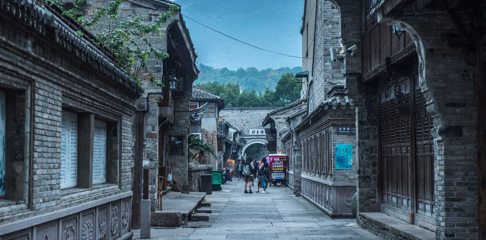

腾格里沙漠自驾攻略
——————————————————
西北地区 宁夏地区
在这里你的车技需要面对各种地形的突发考验，“抵达之前，
每一分钟都是在赶路”赴一场狂野的沙漠盛宴，探访每一处
不为人所知的秘境，深入腹地看遍令人血脉贲张的绝世美景
，在速度与激情中，嗨翻腾格里沙漠之夜。

>>>>>>双击跳过
要做没有名字的古街，却因西游记得了名
腾格里沙漠自驾攻略
——————————————————
西北地区 宁夏地区
在这里你的车技需要面对各种地形的突发考验，“抵达之前，
每一分钟都是在赶路”赴一场狂野的沙漠盛宴，探访每一处
不为人所知的秘境，深入腹地看遍令人血脉贲张的绝世美景
，在速度与激情中，嗨翻腾格里沙漠之夜。
银川
明末清初一些官吏、文人在咏
唱宁夏平原沟渠交织如网、湖
泊珠连其间的秀美景色时，
用“银川”形容水光潋滟、水
映晴光的水乡风光。
昭化寺
仓央嘉措法体停放的地方，
因为人迹罕至，昭化寺一直
保持着传统、纯正的格鲁派
宗教风格和习俗，每年定期进行着
各种祈愿法会。
三道湖
腾格里200多个湖泊中最漂亮的
湖，湖水洁净，可以游泳，每年吸
引各地的越野爱好者到这里撒欢疯
狂。
罗布泊+阿尔金山自驾攻略
——————————————————
西北地区 新疆路线
阿尔金山真的美到爆了，这里有成群的藏野驴，藏羚羊，野牦
牛以及绝美的日出，日落，还有第三大咸水湖，你可以和臧牦
牛赛跑，也可以和藏驴子驰骋，这里是动物的天堂，确是人类
的禁区。
吐鲁番
吐鲁番，一定要在盛夏去，只有在
盛夏，在水与火、清凉与炽热、绿
地与黄沙的转换之间，你才能看到
她最绮丽的色彩。
余墓地
余纯顺是非常著名的探险家
，1996年6月，徒步穿越罗布泊的时
候意外遇难。余纯顺的墓地距离罗
布泊湖心大约有30公里。
沙子泉
沙子泉，在阿尔金山自然保护区境
内，世界海拔最高的沙漠库木库勒
沙山北麓，除了可看到庞大的野牦
牛群外，还可见到沙子泉奇景。
G219新藏线自驾攻略
——————————————————
西南地区 西藏线路
新藏全长1455公里，是世界上海拔最高的公路，途中翻越
5000米以上大山5座，其中最高的界山达坂海拔高达5248
米，是几条进藏路线中最危险的，特别是界山达坂和死人沟。
喀什
汽车在望不到尽头的高原上奔驰
，广袤的土地，偶尓可见散落在草滩
上的几处屋舍，孤独寂寞，又刚朴
执着地在那里守护着他们的主人。
拉孜
拉孜地处西藏自治区日喀则市
中部、念青唐古拉山最西部，古
代茶马古道的重镇，最出名的是这里
的藏刀。
江孜
在后藏日喀则的江孜，有这么一座
寺庙—白居寺，这个明代建筑群，
算是中国惟一一座集建筑、绘画和
雕塑艺术于一身的宗教艺术博物馆